| 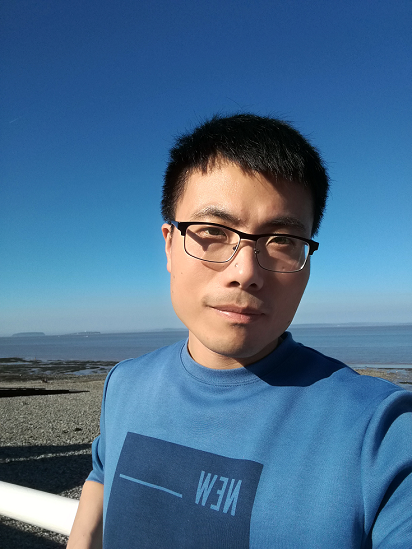 |
|
|||||||||||||||||||
Short Resume
Yun Zhang is now an associate professor in Communication University of Zhejiang (Hangzhou China). He received my Ph.D. in computer science from Zhejiang University (Hangzhou, China), under the guidance of Prof. Ruofeng Tong in 2013. Before that, he received B.S. and M.S. degrees in computer science from Hangzhou Dianzi University (Hangzhou, China), in 2006 and 2009 respectively. He visited Visual Computing Group of Cardiff University from Feb to August in 2018, supervised by Prof. Yu-Kun Lai. During his PhD study, he visited the Graphics and Geometric Computing Group of Tsinghua University during 2010 to 2012, supervised by Prof. Shi-Min Hu.
Yun's research interests are in computer graphics, especially in image and video analysis and editing, stereoscopic editing, Machine learning solutions in vision and graphics.
Publications
| 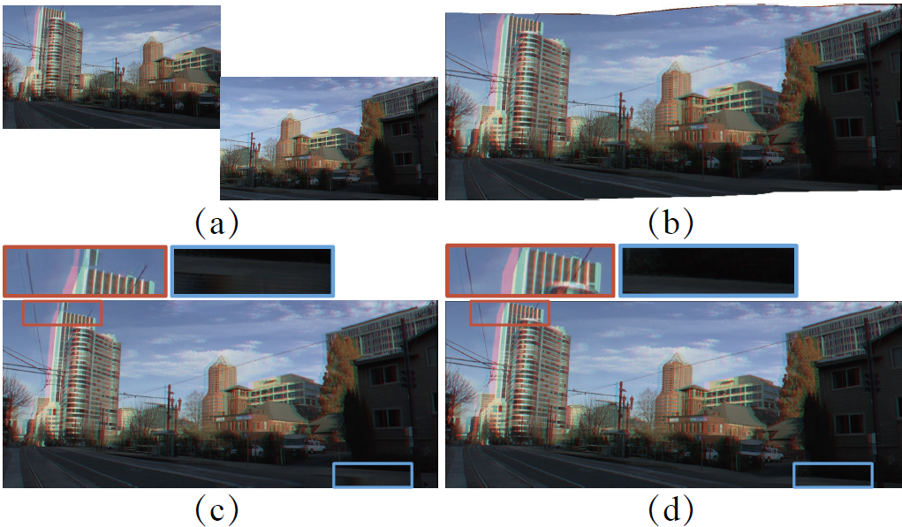 |
Stereoscopic Image Stitching with Rectangular Boundaries Yun Zhang, Yu-Kun Lai, Fang-Lue Zhang. Conditionally accepted to The Visual Computer, CGI 2019, Calgary, Canada
|
| 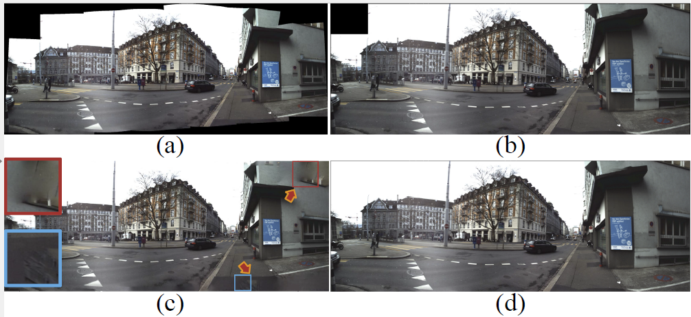 |
Content-Preserving Image Stitching with Regular Boundary Constraints Yun Zhang, Yu-Kun Lai, Fang-Lue Zhang. submitted to IEEE TVCG, 2019, https://arxiv.org/pdf/1810.11220.pdf
|
| 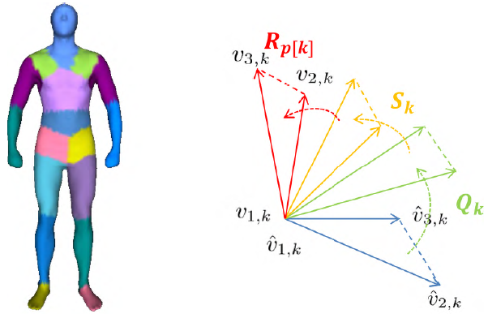 |
Data-driven 3D Human Body Customization with a Mobile Device Dan Song, Ruofeng Tong, Jiang Du, Yun Zhang, Yao Jin. IEEE Access, 2018, 6, 27939--27948.
|
| 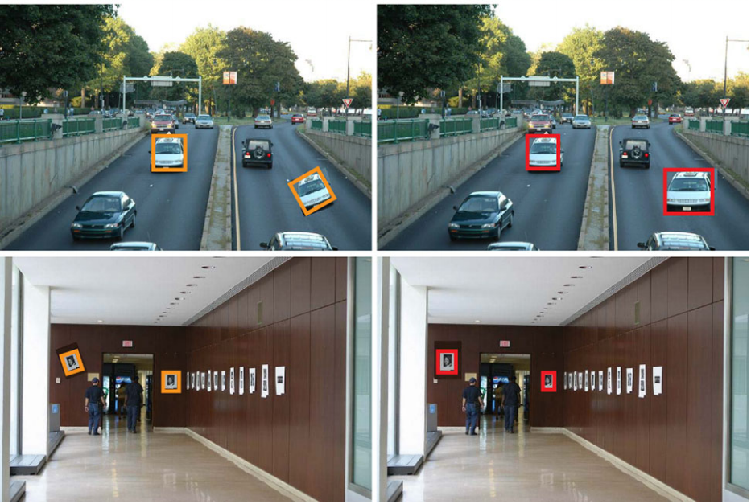 |
Robust Region Duplication Detection on Log-Polar Domain Using Band Limitation Yue Yuan, Yun Zhang, Shuang Chen, Hong Wang. Arabian Journal of Science and Engineering, 2017, 42, 559-565.
|
| 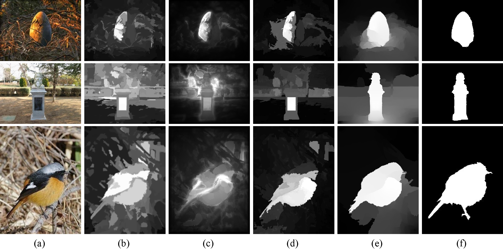 |
Depth Incorporating With Color Improves Salient Object Detection Yan-Long Tang, Ruofeng Tong, Min Tang, Yun Zhang. The Visual Computer, 2016, 32(1), 111-121.
|
| 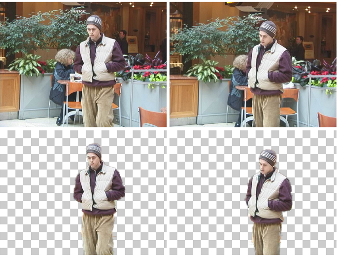 |
Efficient Video Cutout by Paint Selection Yun Zhang, Yan-Long Tang, Ke-Li Cheng. Journal Of Computer Science And Technology, 2015, 30(3), 467--477.
|
| 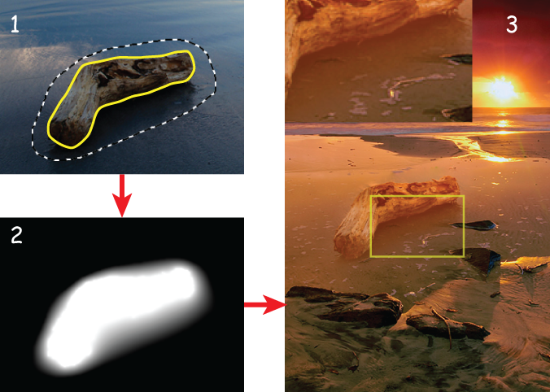 |
Image copy-and-paste with optimized gradient Yun Zhang, Jian Ling, Xiaohong Zhang, Hao Xie. The Visual Computer, 2014, 30(10), 1169--1178.
|
| 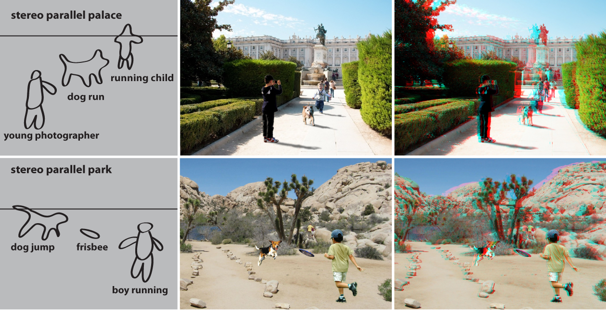 |
StereoPasting: Interactive Composition in Stereoscopic Images Ruofeng Tong, Yun Zhang, and Keli Cheng. IEEE Transactions on Visualization and Computer Graphics (TVCG), 2013, 19(8), 1375-1385.
|
| 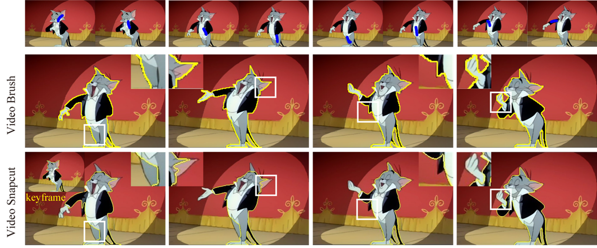 |
Video Brush: A Novel Interface for Efficient Video Cutout Ruo-Feng Tong, Yun Zhang, Meng Ding. Computer Graphics Forum, 2011, 30(7), 2049--2057.
|
| 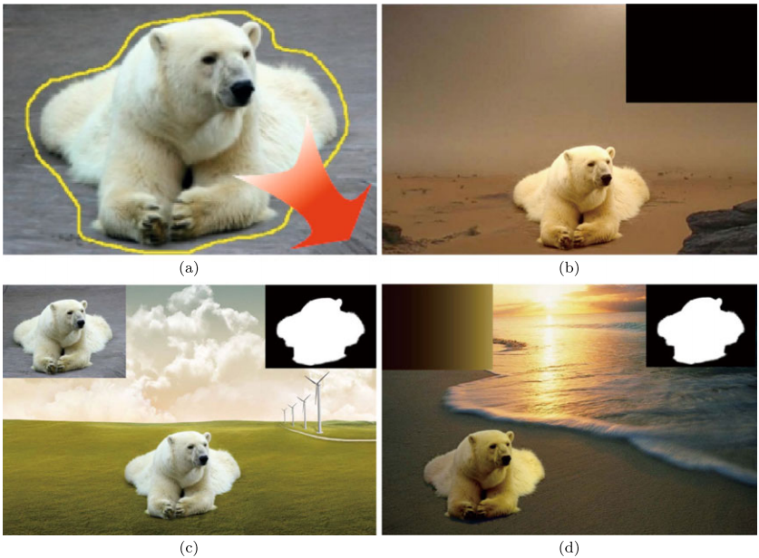 |
Environment-Sensitive cloning in images Yun Zhang, Ruo-Feng Tong. The Visual Computer, 2011, 27(6-8), 739--748.
|
Collaborators
Ke-Li Cheng
Yanlong Tang
Ming Ding
Hao Xie
Professional Activities
Academic Services
Reviewer of International Conferences: Pacific Graphics 2015,2018, EuroGraphics 2014, International Conference on Computational Visual Media (CVM 2012, 2013, 2015, 2016, 2017, 2018).
Reviewer of International Journals: IEEE Transactions on Visualization and Computer Graphics, The Visual Computer, Granular Computing (GRCO), Journal Of Computer Science And Technology, Multimedia Tools and Applications Journal, Frontiers of Computer Science, Computational Visual Media Journal.
Talks
International Conference on Computational Visual Media(CVM) 2013, Hangzhou China.
International Conference on Computational Visual Media(CVM) 2015, Beijing China.
Pacific Graphics(PG) 2011, Kaohsiung Taiwan.
Computer Graphics International(CGI) 2011, Ottawa Canada.
Notice: All the digital papers and videos in this page are the authors' version for personal and classroom use only.
Last updated by Yun Zhang, Jan. 2016 in Hangzhou.